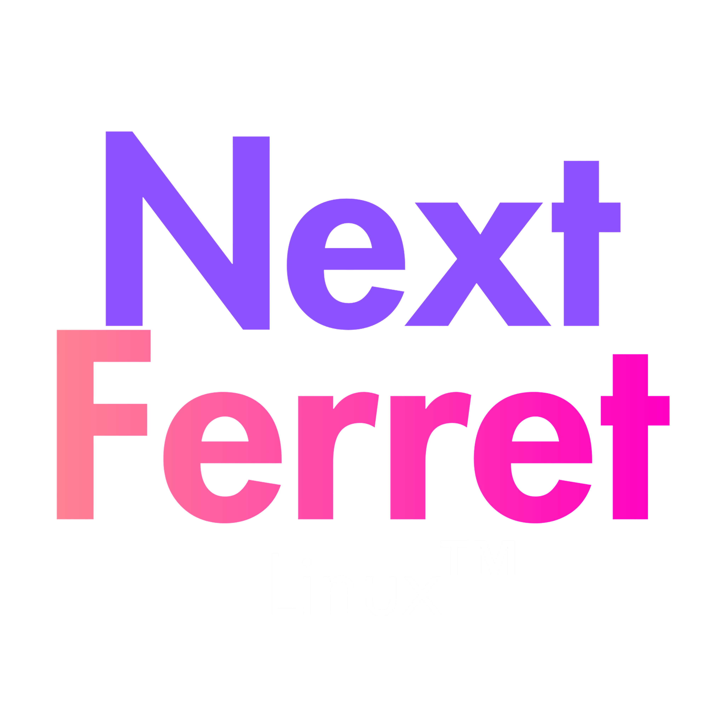

The future is
atomic & mutable.
A Debian Stable based Linux distribution that gives you full ownership. NF-Tree technology provides snapshot safety without forcing sandboxed immutability.

Built for absolute control.
We refuse the overhead of Flatpaks and Snaps. NextFerret Linux keeps the system clean, predictable, and entirely yours.
NF-Tree Architecture!
System updates are handled atomically ensuring boot integrity. Unlike strictly immutable distros, your filesystem remains open and natively modifiable.
Integrated Snapshots!
Break things fearlessly. Built-in snapshot tools automatically capture system states before major changes, allowing instant recovery.
Rollbacks!
Rollback directly from NF-Tree,The System Just Broke? Use NF-Tree or Grub-BTRFS!
Bare-Metal Performance!
Zero forced sandboxing means your hardware is fully dedicated to your tasks. Ideal for gaming rigs, developers, and power users.
"If you can't modify a file in /usr, the operating system is not truly yours."
— The NextFerret Ethos
Ready to take control?
Join the NextFerret Linux project today. Experience the stability of Debian mixed with the bleeding edge of atomic system management.
Download NextFerret Linux